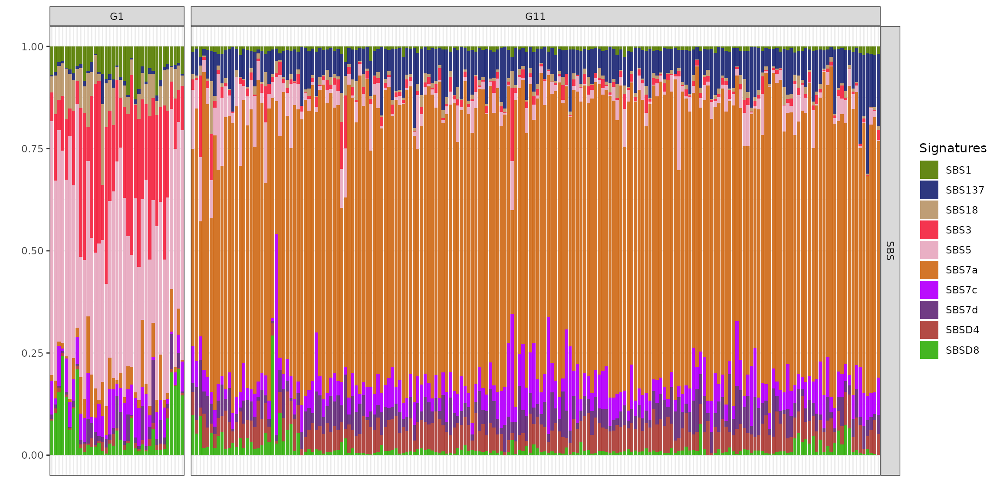
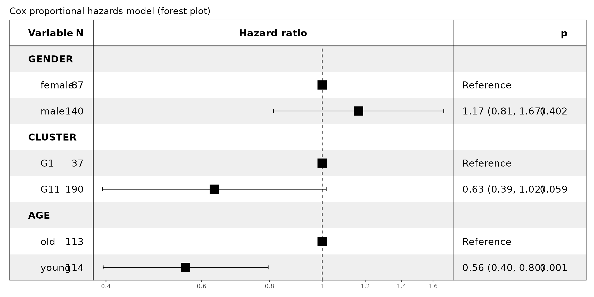

Survival analysis on a skin cancer cohort
3.Survival_Analysis.RmdLoad BASCULE fit object and clinical metadata
We utilized a fit object of the skin cancer dataset from the
International Cancer Genome Consortium (ICGC) cohort, which is readily
available within the package and can be loaded using the command
data("skin_fit").
Subsequent post-processing involved merging related clusters and mapping the de novo inferred mutational signatures to a predefined set of known signatures from the COSMIC (Catalogue of Somatic Mutations in Cancer) database and Degasperi et al. study.
data("skin_fit")
x_orig = merge_clusters(skin_fit, cutoff=0.9)
x = convert_dn_names(x_orig, reference_cat=list(SBS=Degasperi_SBS), cutoff=0.8)
x = convert_dn_names(x, reference_cat=list(SBS=COSMIC_sbs_filt), cutoff=0.8)Clinical metadata corresponding to the skin cancer cohort were
imported using data("skin_clinical") and matched to the
genomic data based on unique patient identifiers. The clinical metadata
includes the following variables:
- PATIENT: Unique patient identifier (ID)
- TISSUE: Cancerous tissue type
- GENDER: Biological sex of the patient
- OS_STATUS: Overall survival status (alive or deceased)
- OS_YEARS: Time to event (measured as the duration until death, if applicable)
- CLUSTER: Cluster assignment as determined by the BASCULE algorithm
- AGE: Age of the patient at diagnosis
We defined a function called sync_metadata which gets
BASCULE object and corresponding clinical metadata as input and
orchestrate and merge those files and based on the patients IDs.
data("skin_metadata")
sync_metadata = function(x, clinical_data) {
exp = get_exposure(x, add_groups=TRUE)[["SBS"]] %>%
group_by(clusters) %>%
filter((n_distinct(samples)>=20), value>0) %>% # keep only clusters with 20 or more members
ungroup()
clusters_list = exp %>% pull(clusters) %>% unique
samples_list = intersect(
x = unique(exp$samples),
y = clinical_data %>% filter(TISSUE=="Skin") %>% pull(PATIENT) %>% unique
)
clinical_data = clinical_data %>% filter(PATIENT %in% samples_list)
exp = exp %>% filter(samples %in% samples_list)
cluster_assignment = exp %>% select(samples, clusters) %>% distinct # get unique sample-cluster assignment
df = merge(x=clinical_data, y=cluster_assignment, by.x="PATIENT", by.y="samples", all.x=TRUE) # merge with clinical data
df$GENDER = as.factor(df$GENDER)
df$OS_STATUS = ifelse(df$OS_STATUS=="DECEASED", 1, 0)
names(df)[names(df)=="clusters"] = "CLUSTER"
df$CLUSTER = as.factor(df$CLUSTER)
df = df %>% mutate(AGE_GROUP = ifelse(df$AGE>median(df$AGE), "old", "young"))
df$AGE_GROUP = as.factor(df$AGE_GROUP)
df = df %>% filter(!is.na(CLUSTER))
return(list("exp"=exp, "df"=df, "cls"=clusters_list))
}
obj = sync_metadata(x, skin_metadata)
exp = obj$exp # exposure matrix in long format (removed clusters with less than 20 samples)
df = obj$df # clinical data (samples from clinical data are mapped with samples from samples from bascule object)
df = df %>% select(-AGE) %>% rename(AGE=AGE_GROUP) # remove age column from metadataExploratory analysis (exposures and de novo signatures)
Analysing n=259 samples, two clusters (samples belonging to clusters with less than or equal 20 members eliminated) and 10 mutational signatures, include eight established signatures SBS1, SBS3, SBS5, SBS7a, SBS7c, SBS7d, SBS18 and SBS137 from COSMIC and Degasperi study, alongside two de novo signatures SBSD4 and SBSD8 detected using the BASCULE framework.
Cluster G1, comprising a smaller subset of samples (n=37), exhibits a heterogeneous mutational profile, predominantly enriched in age-related signatures SBS1 and SBS5, along with SBS3 and SBS18 which has been associated with homologous recombination deficiency and damage by reactive oxygen species. This distinct mutational composition suggests an etiology that diverges from the canonical ultraviolet (UV) damage pathway. Additionally, SBSD8 contributes to the mutational landscape of cluster G1, with some samples displaying elevated proportions of these signatures.
In contrast, cluster G11, encompassing the majority of samples (n=190), is primarily characterized by the SBS7 family (SBS7a, SBS7c and SBS7d), strongly indicative of UV-induced mutagenesis, aligning with the well-established role of UV exposure in the pathogenesis of skin cancers such as melanoma. Notably, signature SBS137 (from Degasperi catalogue), currently with unknown aetiology, is present, and the contribution of the de novo signature SBSD4 is more pronounced in G11 than in G1. The presence of novel signatures SBSD4 and SBSD8 identified via BASCULE suggests the existence of previously uncharacterised mutagenic processes within this cohort.
plot_exposures(x, clusters=c("G1", "G11"))
plot_signatures(x, signames=get_denovo_signames(x))Kaplan-Meier analysis
In this study of n=259 skin cancer samples, we identified ten mutational signatures within two clusters, including the known established signatures like SBS1 (clock-like), SBS5 (clock-like) and SBS7 family (UV-light).
Kaplan-Meier survival analysis revealed distinct survival trends between the clusters (log-rank p=0.033). Cluster G11, which was enriched for SBS7 signatures, exhibited better survival compared to G1.
fit = survfit(Surv(time=df$OS_YEARS, event=df$OS_STATUS) ~ CLUSTER, data=df)
ggsurvplot(
fit=fit,
data=df,
size=1,
pval=TRUE, # show log-rank test p-value
risk.table=TRUE, # add risk table below plot
risk.table.col='strata',
legend.labs=c("G1", "G11"),
title="Kaplan-Meier Survival Curves",
xlab="Time (Years)",
ylab="Survival Probability",
legend.title="Cluster",
pval.size=3,
fontsize=4,
ggtheme=theme_bw()
)Cox proportional hazards analysis
In multivariate Cox regression, with G1 as reference due to its lowest survival outcomes, cluster G11 showed a trend toward a protective effect (n=190, hazard ratio=0.63, 95% CI: 0.39-1.02, p=0.059).
This finding however was borderline significant, possibly because of the effect of age which significantly influenced the hazard: younger patients experienced a 44% reduction in risk relative to older individuals (n=114, hazard ratio=0.56, 95% CI: 0.40-0.80, p=0.001), whereas gender did not significantly affect the outcome.
format = forest_model_format_options(
colour="black",
color=NULL,
shape=15,
text_size=5,
point_size=6,
banded=TRUE
)
cox_model = coxph(Surv(time=OS_YEARS, event=OS_STATUS) ~ GENDER + CLUSTER + AGE, data=df)
forest_model(cox_model, format_options=format, factor_separate_line=T, recalculate_width=F, recalculate_height=T) +
labs(title="Cox proportional hazards model (forest plot)") +
patchwork::plot_layout(axis_titles="collect", axes="collect")